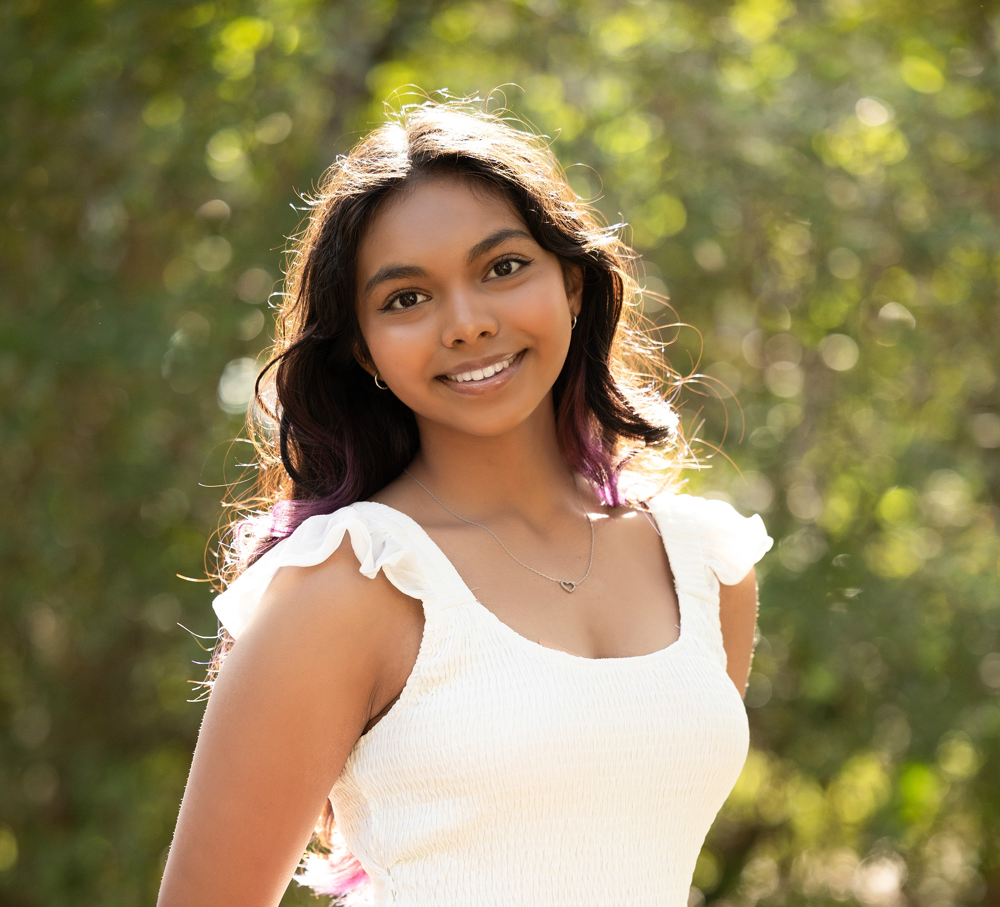
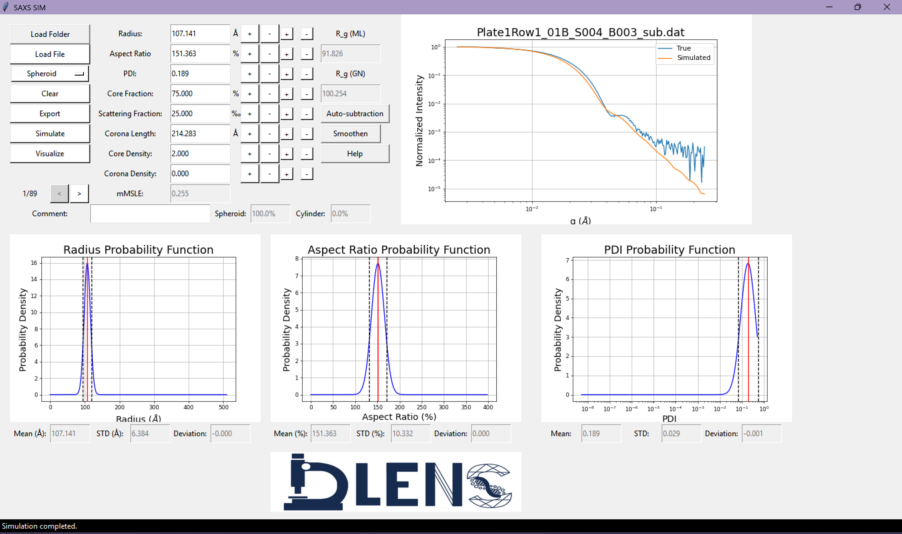
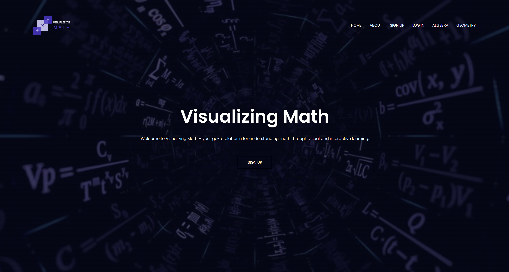
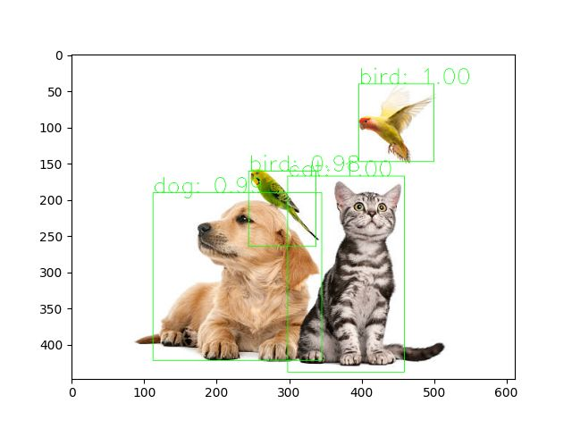
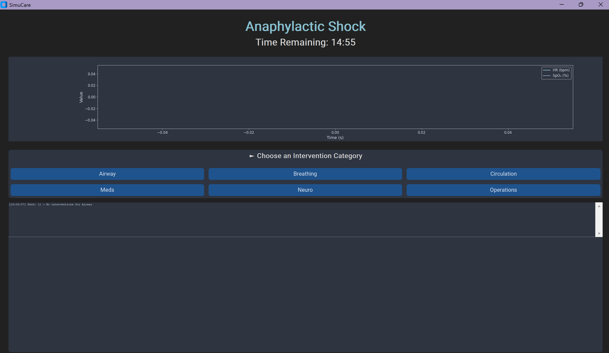

Computer Science @ UT Austin
Hi! I'm Akshita. I build software, train machine learning models, make internship vlogs, and occasionally convince robots to behave. I'm currently studying Computer Science at UT Austin and spend most of my time somewhere between AI agents, healthcare technology, robotics, and whatever side project sounded like a good idea at 2 AM.
Education: B.S. in Computer Science, Minor in Business — May 2028
Relevant Coursework: Data Structures & Algorithms, Operating Systems, Linear Algebra, Computer Architecture
Java, Python, C++, C, JavaScript, TypeScript, C#, Swift
FastAPI, Node.js, Express, REST APIs, PostgreSQL, MySQL, InfluxDB, MongoDB, Prisma, SQL, WebSockets
OpenAI API, AI Agents, MCP (Model Context Protocol), TensorFlow, PyTorch, scikit-learn, Pandas, NumPy, OpenCV
Docker, AWS, Git, GitHub, React, Vite, Figma, MATLAB, R
Oracle Certified Associate - Java SE 8 Programmer (Issued May 2024)
Turning confusing ideas into demos, Explaining engineering to non-engineers, Building things just because they sound fun
San Jose, CA | May 2026 – Present
Houston, TX | May 2025 – August 2025
Austin, TX | December 2024 – December 2025

Austin, TX | August 2024 – May 2025

Houston, TX | July 2023 – August 2023
React, Vite, Node.js, Express, Prisma, PostgreSQL, WebSockets, Docker
Python, PyTorch, OpenCV

Python

C | February 2025
C, Multithreading, Virtual Memory, File Systems | August 2025 – December 2025
Austin, TX | January 2025 – Present
Tomball, TX | August 2020 – May 2024
Email: akshitasantra@utexas.edu